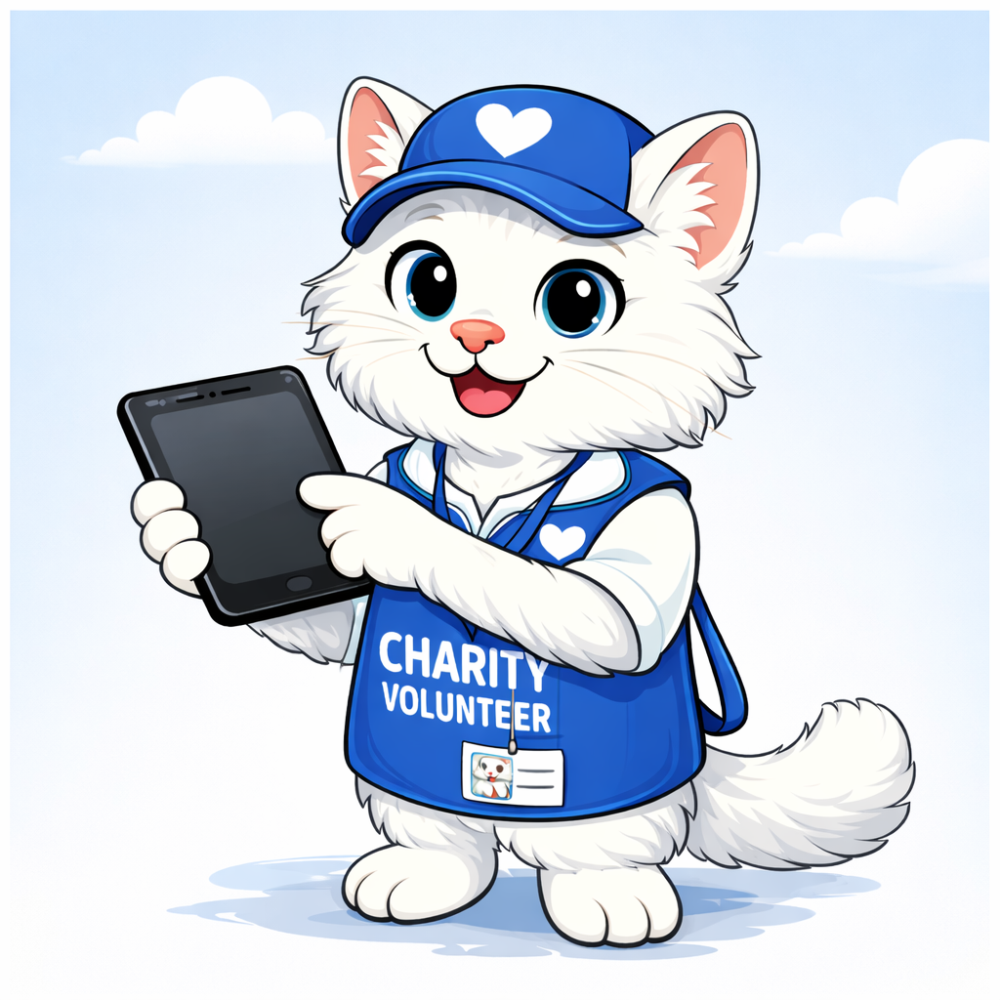
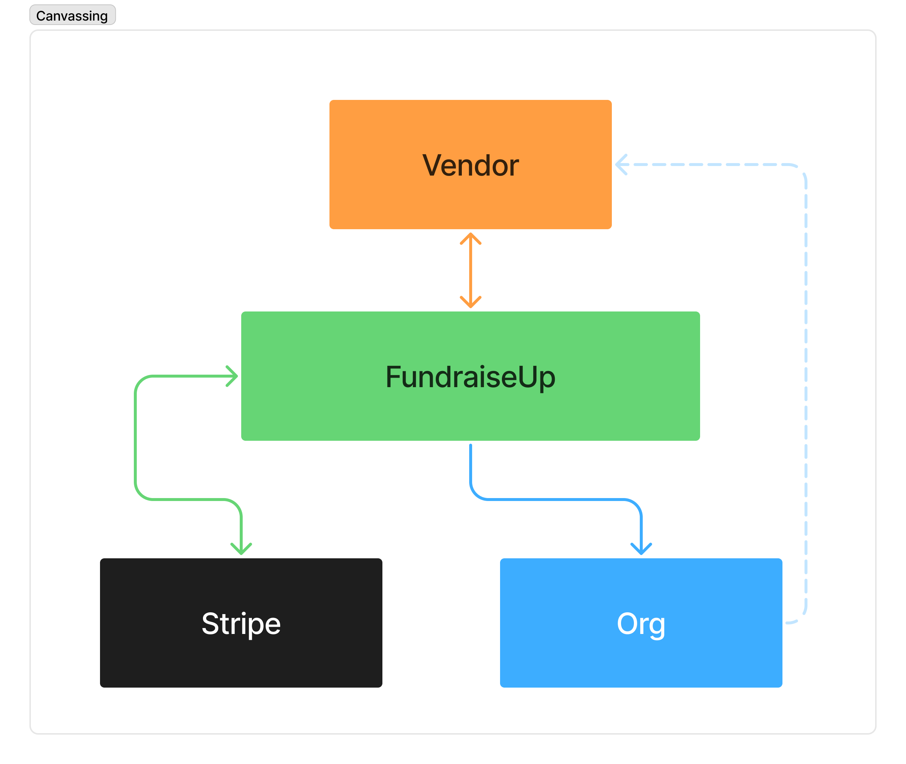
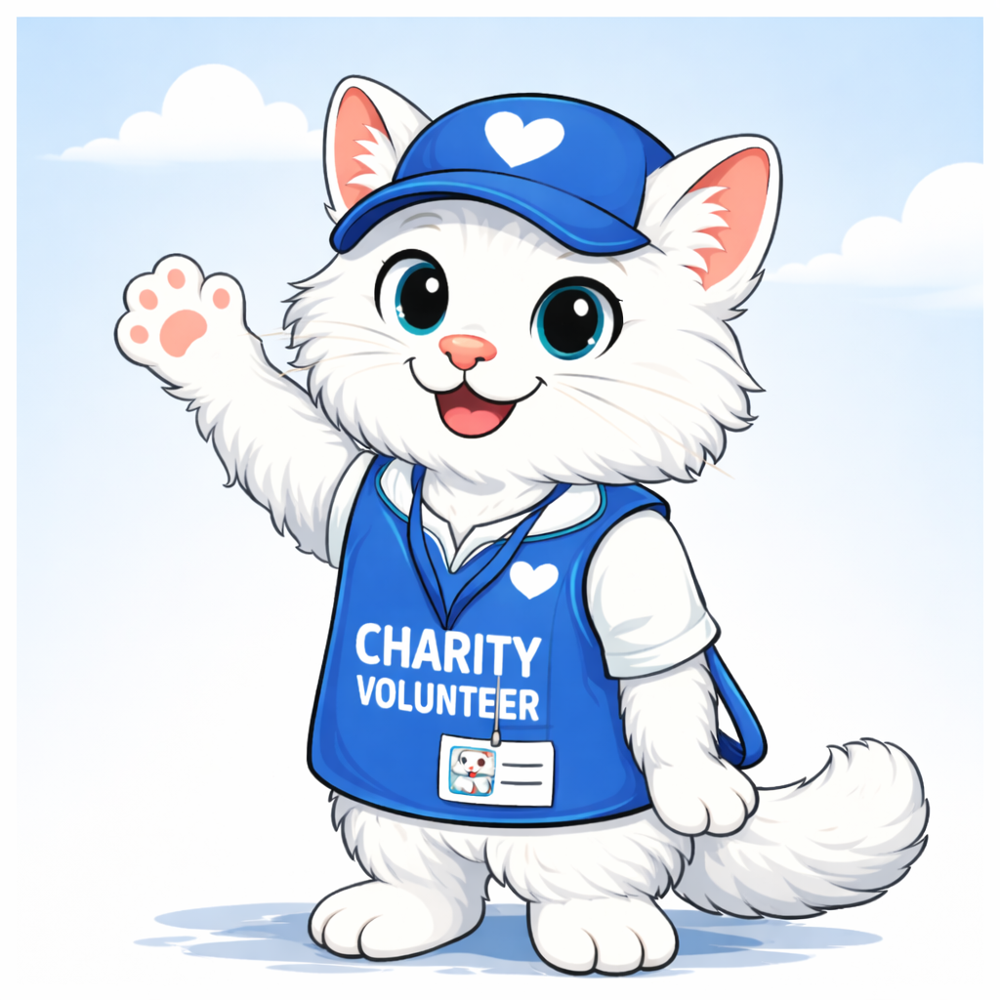

A new donation channel, but outsourced surface
Vendors own:
Benefits:
No competition. No overlap.
Clear separation of responsibilities. Value for all parties.

Offline acquisition, same backend logic.
Already live. Already paying. Time to scale.
